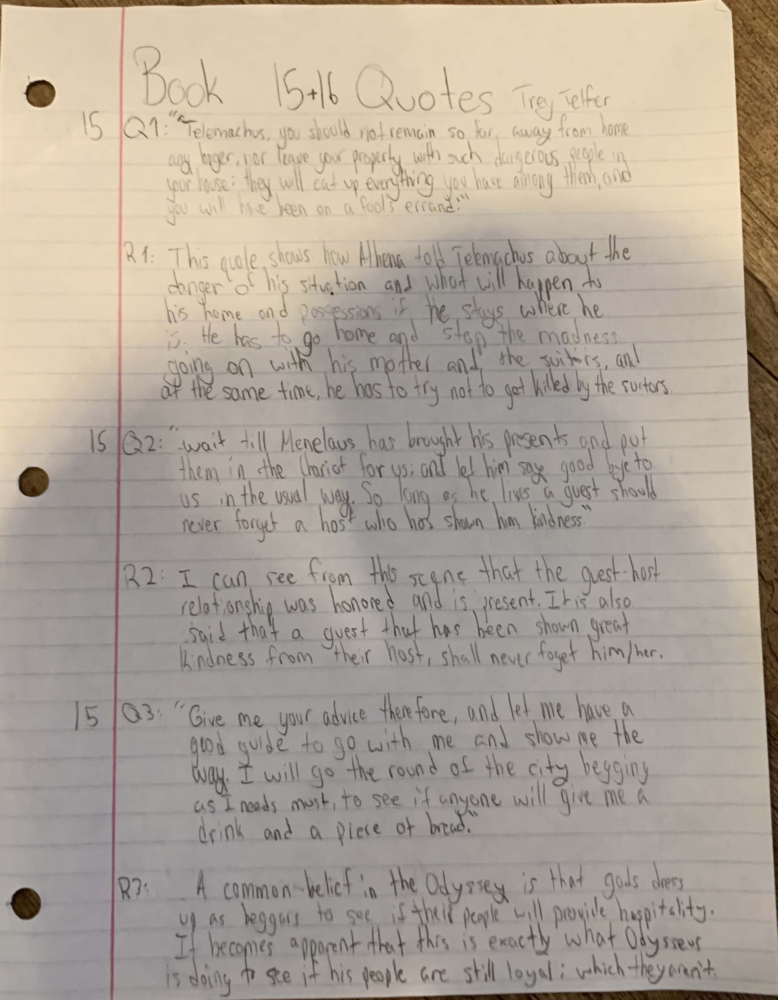
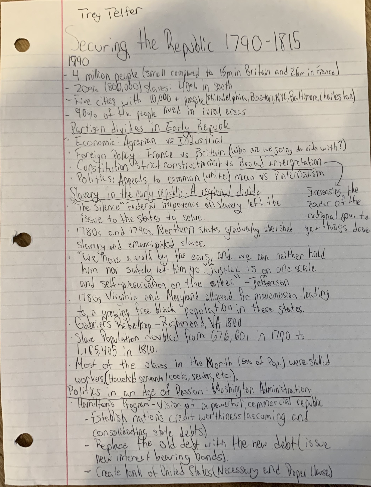
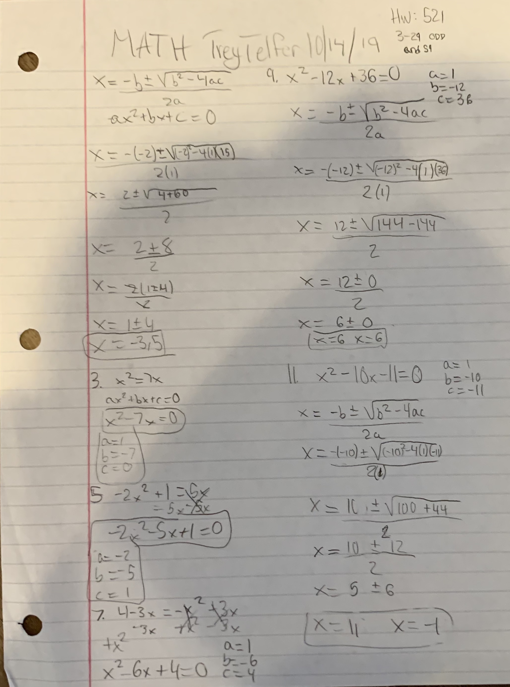

This is an example of my homework from literature class. It shows how I analyzed the information that i pulled from quotes, in the Odyssey, which will help me in my writing later on. I included this because it supports and will continue to help my stretch, analysis in writing.
History Artifact
 (change to annotation) This is an example of my History annotations which I believe are a strength of mine. I take different perspectives while reading and analyzing information from Give Me Liberty.
Math Artifact
 This is an example of my math homework. It doesnt really represent much of my strength or stretch because those take place in other subjects, but I chose it because I did good on this assignment and enjoyed it.
Spanish Artifact
This is a my Spanish project that I enjoyed. It represents hard work and timeliness that I put toward creating it.